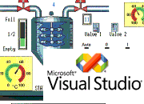

Prva računala za kontrolu industrijskih procesa praktički i nisu imala nikakvu interakciju sa ljudima koji su nadzirali proizvodnju. Ako su i imali to su bile kontrolne ploče naslijeđene od ranijih relejnih sustava upravljanja. Razvojem informatičke tehnologije monitori su postali sastavni dio i industrijskih postrojenja te je nadzor i interakcija ljudi i strojeva postala mnogo jednostavnija i efikasnija. Razvoj aplikacija u ovom segmentu automatizacijskih sustava dugo je bio moguć samo sa specijalnim razvojnim alatima. Pojavom OPC tehnologije stvari su se bitno promjenile te se sada ovaj dio posla može obaviti s gotovo bilo kojim programom i razvojnim okolinom opće (programske) namjene. Ovdje ću pokušati objasniti razvoj malog programa pisanog u Visual Basicu 6 koji koristi OPC tehnologiju za komunikaciju s procesnim računalom i može poslužiti kao operatorsko sučelje (HMI).
{kind=link}
Visual Basic 6
Basic (Beginners All-Purpose Symbolic Instruction Code) je programski jezik kojeg koriste, ili su koristili, najviše programera u povijesti računalstva. Visual Basic 6 je inaćica koja sadrži više stotina naredbi i funkcija te je integriran u razvojnu okolinu (IDE) za brzi i pregledni razvoj aplikacija s grafičkim sučeljem. Osim Visual Studija, Visual Basic 6 je sastavni dio i Microsoft Office paketa gdje služi za automatizaciju Excela, Worda ili PowerPointa. Upravo ta inaćica nazvana VBA (Visual Basic for Application) je i skriptni jezik mnogih komercijalnih razvojnih okolina za razvoj SCADA i HMI aplikacija kao što su WinCC (Simatic) ili FactoryTalk (RockwelSoftware). Ova činjenica te relativna jednostavnost učenja i primjene dobar su razlog da se pozabavite Visual Basicom mada će vas mnogi profesionalni programeri gledati s prezirom. Iako ne možemo reći u potpunosti, VB6 je objektni programski jezik i za razvoj aplikacije koristimo objekte . Objektima možemo podešavati svojsta (Properties) i definirati akcije na pojedine događaje (Events). Isto tako objektima možemo definirati aktivnosti koje će izvršati i to se zovu metode (Methode). Razvojna okolina VB6 sastoji se od nekolko cijelina :
- u sredini zaslona je objekt koji se naziva forma (Form) i on predstavlja grafičko sučelje naše aplikacije. Na formu stavljamo ostale objekte grafičkog sučelja kao što su tipke (Buttons), natpisi (Labels), padajuči izbornici (DropdownBoxs), slike (Images) i tako dalje. Isto tako u na tome mjestu može biti programski editor gdje pišemo programski kod. Klikom miša na pojedini objekt prelazimo iz grafičkog u tekstalni mod izrade aplikacije odnosno prelazimo u programski editor.
- s lijeve strane zaslona nalazi se traka s dostupnim objetima (Toolbox) koje možemo prebaciti na formu jednostavnim potezanjem mišom.
- s desne strane uobićajeno je da se nalaze tablični preglednici svojstava i strukture našeg projekta. Kada kliknemo na pojedini objekt na formu (selektiramo ga) u ovom pregledniku se automatski izlistavaju svojstva dotičnog objeka gdje ta svojstva možemo i mijenjati.
{kind=link}
Osim toga na vrhu zaslona nalazi se standarni izbornik (Menu) sa svim alatima potrebnim za manipulaciju s programskim elementima, kompaliranjem programa, traženjem pogrešaka i definiranjem opcija razvojne okoline. Na dnu zaslona se u pojedinim fazama programiranja pojavljuju prozori s rezultatima kompajliranja i eventualnim pogreškama. Dakle ako niste nikada programirali u VB6 potrebno je malo detaljinije se upoznati s načinom rada u njemu. Na interentu imate mnogo tutorijala od početnih koraka do naprednih opcija pa se ja ovdje neću više baviti time.
OPC server – simulator procesa
Da bi zrada bilo koje HMI/SCADA aplikacije bila komforna, odnosno da se ne piše na slijepo, potrebno je imati i vezu prema sklopovskoj opremi (PLC-u). Kako je kanal komunikacije prilkom pisanja ovakvih aplikacija korištenjem VB6 OPC server neophodno je imati i OPC server sposoban za komunikaciju prema ciljanom PLC-u. Da bi vam demonstrirali primjer pisanja male HMI aplikcaije koje vi možete modificirati i testirati napisan je poseban OPC server. Ovaj OPC server ne treba nikakvu slopovsku opremu nego u svom kodu mijenja vrijednosti tag varijabli. Ovakve simulatorske OPC server možete naći kod svih proizvođača OPC servera ali ono što ovaj server razlikuje od njih je to da on u potpunosti simulira mali stvarni proces. To znaći da vi ne morate ručno mijenjati vrijednosti OPC tagova (na strani simulatora) nego se OPC server ponaša kao da je spojen na PLC koji upravlja industrijskim procesom. Radi se o jednostavnom procesu punjenja i pražnjenja spremnika tekućine.
OPC server QuercusLab.ProcesSimulatorLite.1.0 sadrži sljedće OPC stavke:
| OPC stavka | Tip varijable | Opis |
| Tank.AutomaticMode | VT_Bool (Boolean) | Mod rada simulatora procesa (ručno/automatski) |
| Tank.Level.Value | VT_I4 (Long Integer) | Trenutna razina tekućine u spremniku |
| Tank.Level.Preset | VT_I4 (Long Integer) | Zadana razina tekućine u spremniku |
| Tank.Level.Hysteresis | VT_R4 (FLoat) | Histereza uključivanja punjenja u postocima |
| Tank.SourcePump.ON | VT_Bool (Boolean) | Status dobavne pumpe |
| Tank.DrainValve.ON | VT_Bool (Boolean) | Status ventila za ispuštanje |
Punjenje spremnika ostvaruje se uključivanjem dobavne pumpe Tank.SourcePump.ON a pražnjenje uključivanjem ventila za ispuštanje Tank.DrainValve.ON. Razina u spremniku Tank.Level.Value se može kontrolirati definiranjem stavke Tank.AutomaticMode. Ručni mod omogućava neovisnu kontrolu rada dobavne pumpe i ispusnog ventila. Automatski mod osigurava konstantnu zadanu razinu Tank.Level.Preset upravljanjem radom dobavne pumpe. Dobavna pumpa se uključuje nakon što razina padne ispod zadane za vrijednost definiranog postotka Tank.Level.Hystersis a isključuje kada razina dostigne zadanu vrijednost. Mod rada nema utjecaja na ventil za ispuštanje i on se uvijek može uključivati i isključivati.
Visual Baisc 6 HMI aplikacija
Izgradnja OPC klijent HMI aplikacije korištenjem VB6 programskog jezika se može razvrstati na dva osnovna načina:
- pisanje programa korištenjem osnovnih univerzalnih objekta korisničkog sučelja
- pisanje programa korištenjem specijaliziranih objekta namijenjenih radu sa OPC serverom
Prvi način zahtjeva više posla jer je potrebno pisanje vlastitih rutina dohvata podataka s OPC servera korištenjem poziva specificiranim u DA Automatizacijskom sučelju. Brigu o dobivenim podacima također mora voditi programer te ih obrađivati i prosljeđivati univerzalnim objektima korisničkog sučelja ili baze podataka. Ovakav način uz svoje nedostatke ima i prednosti u vidu potpune kontrole nad aplikacijom i maksimalne prilagodljivosti klijent aplikacije zahtjevima korisnika. Drugi način oslobađa programera ovih poslova jer se o tome brinu odabrani specijalizirani objekti. Zadatak programera je da odabere objekte koji će najbolje odgovarati zahtjevima OPC klijent aplikacije, implementira ih u svoj projekt te ih parametrira. Današnja ponuda takvih objekata je dosta velika i ona uključuje kontrole vizualizacije procesa, obrade i prezentacije alarma, pripreme i implementacije recepata, generiranja izvještaja te kontrole baza podataka. Osnovna prednost ovakvog načina izgradnje OPC klijent aplikacije je brzina izrade i smanjena mogućnost skrivenih grešaka jer su korištene kontrole već prošle testiranje. Negativni aspekti su uniformnost aplikacija i dodatna sredstva za nabavku kontrola koja poskupljuju aplikaciju. Naravno da je moguće i kombinacija ova dva načina tako da se maksimalno iskoriste prednosti i eliminiraju mane obiju načina
Grafičko sučelje – HMI vizualizacija
U ovoj OPC klijent HMI aplikaciji pokazati ćemo upravo taj kombinirani način. Aplikacija će se bazirati isključivo na vizualizaciji procesa i upravljanju osnovnim aktuatorima procesa radi jednostavnosti i boljeg razumijevanja početnicima. Shodno tome i elementi za njenu izgradnju su zaparavo grafički objekti vizualizacije. Kao primjer korištenja gotovih objekta,koji mogu biti komercijalni ili besplatni, imat ćemo jednostavne grafičke prekidače i lampice. Ovi objekti su zapravo ActiveX kontrole koje smo razvili isto tako korištenjem Visual Basica te su kompajlirani zasebno. ActiveX objekt koje ćemo koristi nosi naziv Mini_HMI.ocx i sadrži kontrole qlSwitch, qlLamp i qlSwitchFaceplate.
{kind=link}
Drugi način je kreiranje vlastiti kontrola unutar samog programskog koda koji se koriste isto kao i prije opisane komercijalne kontrole. Generiranje ovih kontrola je na način da se u projekt doda takozvani UserControl objekt. UserControl može sadržavati sve što i Form objekt tako da se više standardnih VB kontrola može implementirati u novu, vlastitu. Ponašanje ovakvog objekta unutar HMI aplikacije definirate u programskom kodu. Programski kod korisničkih kontrola je, kao i izvršni kod, integralni dio Visual Basic projekta. Programiranje ovih kontrola je , uz neke specifičnosti, identično kao i programiranje ostalih elementa VB6 projekta. Važno je napomenuti da se prilkom kreiranja UserControl objekta vodi idejom da se on piše što je više moguće univerzalno da bi se mogao upotrebiti više puta unutar samog projekta ili na nekim drugim projektima. Dobro napisani UserControl se može izdvojiti iz projekta i iz njega se može kompajlirati ActiveX kontrola koju smo spomenuli prije. U našoj HMI aplikaciji koristit ćemo UserControl objekt qlTank koji će vizualizirat sam spremnik. Korisnička kontrola se sastoji od dvije Label kontrole te jedne Shape kontrole. Label kontrole služe za ispis naziva spremnika i ispisa razine tekućine u spremniku dok Shape kontrola predstavlja senzor razine. Sama dinamička vizualizacija razine u spremniku odrađena je korištenjem grafičkih API poziva. Ovaj način programiranja je malo složeniji i zahtjeva bolje poznavanje programiranja ali omogućava efektivniju i složeniju vizualizaciju. Ako niste vični ovakvom načinu programiranja na raspolaganju su vam milijuni besplatnih UserControl objekta koje možete skinuti s interneta i koristiti prilikom razvoja vlastite HMI aplikacije.
{kind=link}
Treći način je da ne koristite ništa od ovoga navedenog nego da svoju HMI aplikaciju gradite korištenjem standardnih kontrola koje dolaze uz VisualBasic 6 i pisanjem programskog koda u osnovnim procedurama.
Kreiranje grafičkog sučelja odnosno vizualizacije započinjete postavljanjem gore navedenih objekta na glavnu (u ovom slučaju i jedinu) formu aplikacije. Prilikom pokretanja VB6 automatski se generiranja jedan Form objekt koji je ujedno i glavni odnosno startni. Po potrebi možete dodavati još formi korištenjem menu komandi Project.AddForm te ih pozivati iz programskog koda u skladu s vašim idejama. Elemente korisničkog sučelja jednostavno dovlačite iz trake s alatima i postavljate na formu. Prilikom postavljanja automatski se generiraju imena objekta i oni se pojavljuju u tablici na desnoj strani ekrana. Tamo im možete mijenjati nazive kao i većinu svojstava. U traci s alatima se nakon prvog pokretanja mogu naći samo standardne kontrole. U našem slučaju se koristimo s dodatnim kontrolama te ih moramo dodati u traku s alatima. ActiveX kontrole su datoteke s ekstenzijom *.ocx i uobičajno je da se nalaze u sistemskom folderu …windows/system32 ali će raditi s bilo koje lokacije ako se dobro registriraju. Dakle nakon što ste kopirali ActiveX datoteku u željeni direktorij potrebno je kontrolu registrirati i to činite tako da odete na Windows StartButon/Run te u Open upišete “regsrv32 <puna putanja/naziv activex datoteke>”. Nakon što ste uspješno registrirali ActiveX kontrolu možete ju dodati u traku s alatima tako što će te kliknuti (desni klik) na traku s alatima i izbrati komandu Components. Na zaslonu će se pojaviti lista svih regsitriranih ActiveX kontrola te će te ju odabrati i kliknuti OK. U našem slučaju će te odabrati “Quercus Lab mini HMI Components” i nakon što ste kliknuli Ok gore opisane kontrole odnosno njihove ikone će se pojaviti u traci s alatima.
{kind=link}
UserControl ikone se automatski pojavljuju u traci s alatima kada se dodaju u projekt. Dodati se mogu na dva načina. Prvi je da se iz menija aktivira komanda Project/Add UserControl i tada se dodaje korisnička kontrola bez koda. Dakle ovo će te raditi kada želite napraviti novu korisničku kontrolu. U slučaju da ju već imate, bilo iz prijašnjeg projekta ili ste ju skinuli s interneta, dodat će te ju na način da kliknete na Project drvo ( na desnoj strani zaslona) te aktivirate komandu Add/User Control te iz dijaloga Add UserControl/Existing izaberete datoteku s programskim kodom kontrole.
{kind=link}
Spajanja na OPC server
Nakon što ste pripremili i kreirali svoje HMI grafičko sučelje možete priječi na pisanje koda za komunikaciju s procesnom opremom. Ovdje se pristup bitno razlikuje od rada na komercijalnim SCADA razvojnim alatima. Ako je kreiranje izgleda grafičkog sučelje bilo slično komunikacijski dio je morate odraditi isključivo pisanjem programskog koda. Još je nešto neophodno da napravite prije samog kodiranja a to je podešavanje komunikacijskog kanala. U VB 6 on može biti isključivo OPC server i moramo u projekt dodati ActivX objekt koji zna komunicirati s njim. Taj objekt se naziva DA Automation Wraper i može se besplatno skinuti s web stranica OPC fondacije. Kao i kontrole i ovaj wraper se mora prvo registrirati u sustav po gore opisanoj proceduri a tek potom ga se može dodati u reference projekta. Dodavanje se vrši izborom komande Project/References iz glavnog menija.
{kind=link}
Sada smo spremni za pisanje koda: Pisanje koda započinjemo u području deklaracija tako da deklariramo neophodne OPC objekte. Radi se o objektima tipa OPCServer, OPCGroups i OPCGroup. Objekte koji imaju događaje deklarirat ćemo s ključnom riječju WithEvents da bi mogli koristiti iste. Drugi dio deklaracija odnosi se na varijable u koje spremamo podatke. To će biti varijable tipa polje u koje ćemo spremati nazive tagova (OPCItemIDs), korisničke šifre tagova (OPCItemsClientHandles), serverske šifre (ItemServerHandles) te greške prilikom transakcija s OPC serverom (ItemServerErrors). Na kraju dodajemo ostale varijable koje će služiti u algoritmima prezentacije podataka.
Dim WithEvents simOPCServer As OPCServer Dim simGroups As OPCGroups Dim WithEvents simOPCGroup As OPCGroup Dim OPCItemCollection As OPCItems Dim OPCItemCount As Integer ' količina opc stavki Dim OPCItemIDs() As String ' polje identifikacijskih oznaka (naziva) stavki Dim OPCItemsClientHandles() As Long ' polje šifri stavki definiranih od strane klijenta Dim ItemServerHandles() As Long ' polje šifri stavki definiranih od strane servera Dim ItemServerErrors() As Long ' polje za spremanje greški servera Dim RemoveItemServerErrors() As Long ' Dim WriteServerHandles() As Long ' polje za upis stavki na opc server - serverska sifra Dim ItemsValue() As Variant ' polje za vrijednosti stavki |
Nakon što smo deklarirali neophodne varijable OPC objekte potrebno je na početku izvršavanja programa i kreirati ih. To ćemo napraviti u događaju Form _Load:
Private Sub Form_Load() ' EVENT: kada se ucita form (prakticki na pocetku programa) Set simOPCServer = New OPCServer ' kreira se objekt OPCServer Call OPC_Connect("QuercusLab.ProcesSimulatorLite.1.0") ' poziv potprograma spajanja na OPC server Call OPCValue_Init ' poziv potprograma inicijalizacije vrijednosti procesa End Sub |
Za spajanje i prekid veze s OPC serverom pisat ćemo posebne procedure i onda ih pozivati po potrebi. Procedura za spajanje naziva se OPC_Connect a kao parametar prosljeđujemo naziv OPC servera. Pozivom metode simOPCServer.Connect spajamo se na isti. Slijedi kreiranje OPCGruop objekta te definiranje njegovih svojstava. Neophodno je kreirati bar jednu OPC grupu metodom simGroups .Add(“Tank”) te definirati vrijeme osvježavanja podataka svojstvom simGroups.UpdateRate. Potom ćemo proglasiti grupu aktivnom s svojstvom simGroups.DefaultGroupIsActive = True. Želimo li zaprimati podatke svaki puta kada se promjene vrijednosti tagova definirati ćemo to svojstvom simGroups.IsSubscribed = True. Dodavanje tagova (u OPC terminologiji Items– stavki) započinjemo dimenzioniranjem polja u koja spremamo simboličke nazive i korisničke šifre tagova. Nazive spremamo u u polje OPCItemIDs a korisničke šifre u polje OPCItemClientHandles. Završetak dodavanje tagova je pozivanje metode OPCItemCollection.OPCItems.AddItems a parametri koji su neophodni su broj stavki (broj članova definiranih polja), polje s nazivima stavki (OPCItemsIDs), polje s korisničkim šiframa (OPCItemClientHandles), polje serverskih šifri (ItemServerHandles) te polje za eventualne greške prilikom transakcije (ItemsServerErrors). Polje serverski šifre je prazno polje koje dimenzionira server i u njega upisuje vlastite šifre naših tagova koje korespondiraju indeksom s korisničkim šiframa.
Private Sub OPC_Connect(ByVal OPC_ServerName As String) ' PODPROGRAM: SPAJANJE NA OPC SERVER ' aktiviram OPCserver objekt , spajam se na njega i dodajem (prijavljujem) tagove simOPCServer.Connect (OPC_ServerName) ' spajanje na OPC server Set simGroups = simOPCServer.OPCGroups ' kreira se objekt OPCGroups simGroups.DefaultGroupIsActive = True ' objekt aktivan simGroups.DefaultGroupDeadband = 0 ' definicija "mrtvog pojasa" analognih stavki (globalno) Set simOPCGroup = simGroups.Add("Tank") ' kreira se objekt OPCGroup s nazivom "Tank" simOPCGroup.UpdateRate = 300 ' milisekunda ' period osvježavanja podataka u milisekundama simOPCGroup.DeadBand = 0 ' definicija "mrtvog pojasa" analognih stavki simOPCGroup.IsSubscribed = True ' pretplate stavki aktivne Set OPCItemCollection = simOPCGroup.OPCItems ' kreira se objekt OPCItems OPCItemCollection.DefaultIsActive = True ' objekt aktivan ' priprema polja stavki za dodavanje na OPC server OPCItemCount = 6 ' broj stavki ReDim OPCItemIDs(6) ' dimenzioniranje polja naziva stavki ReDim OPCItemsClientHandles(6) ' dimenzioniranje polja šifri stavki ' definiranje stavki OPCItemsClientHandles(1) = 1: OPCItemIDs(1) = "Tank.Level.Value" ' OPCItemsClientHandles(2) = 2: OPCItemIDs(2) = "Tank.Level.Preset" OPCItemsClientHandles(3) = 3: OPCItemIDs(3) = "Tank.Level.Hysteresis" OPCItemsClientHandles(4) = 4: OPCItemIDs(4) = "Tank.SourcePump.ON" OPCItemsClientHandles(5) = 5: OPCItemIDs(5) = "Tank.DrainValve.ON" OPCItemsClientHandles(6) = 6: OPCItemIDs(6) = "Tank.AutomaticMode" ' dodavanje stavki na server ' OPCItemCount - broj stavki koje se dodaju ' ItemsIDs - polje s nazivima tagova ' OPCItemsClientHandles - polje s siframa stavki definirani od strane klijenta ' ItemServerHandles - polje u koje ce OPC server upisati (vratiti) serverske sifre stavki ' (ove sifre ce se koristiti prilikom upisa vrijednosti tagova na OPC server) ' ItemServerErrors - polje u koje ce server upisati eventualne greske prilkom ove transakcije OPCItemCollection.AddItems OPCItemCount, OPCItemIDs, OPCItemsClientHandles, ItemServerHandles, ItemServerErrors ' ako je nesto poslo krivo ispisujem gresku i zaustavlja aplikaciju For i = LBound(ItemServerErrors) To UBound(ItemServerErrors) If ItemServerErrors(i) <> 0 Then MsgBox "Greška prilkom dodavanja stavki na OPC server!" & OPCItemIDs(i), vbOKOnly, "Error" Unload Me Stop End If Next End Sub |
Primanje i slanje podataka
Zahvaljujući tome što smo se prilikom spajanja pretplatili (.IsSusctibed=True) na podatke ne trebamo provjeravati stanje vrijednosti tagova. OPC server će svaki put kada se vrijednost bilo kojega taga promjeni generirati događaj DataChange i proslijediti nam nove vrijednosti. Prosljeđuje se broj stavki NumItems (praktički broj elementa polja podataka), polje s šiframa stavki ClientHandles, polje s vrijednostima tagova ItemValues, polje s kvalitetom veze Qualities, polje s vremenom očitanja TimeStamps te oznake transakcije TransactionID. Na nama je zadatak da prođemo kroz polje korisnički šifri, dekodiramo tagove te vrijednosti istih ispišemo u kontrole na našem ekranu. To uobičajno činimo koristeći se Case petljom za dekodiranje i For…Next petljom za provjeru svih članova polja.
Private Sub simOPCGroup_DataChange(ByVal TransactionID As Long, ByVal NumItems As Long, ClientHandles() As Long, ItemValues() As Variant, Qualities() As Long, TimeStamps() As Date) ' EVENT: kada se promjeni stanje "pretplacenih" tagova OPC server generira ovaj event i salje vrijednosti tih tagova ' NumItems - broj (kolicina) tagova ' ClinetHandles() - korisnicke sifre tagova ' ItemsValue() - vrijednosti tagova Dim i As Integer ' obrada svih tagova For i = 1 To NumItems 'Debug.Print ClientHandles(i) 'Debug.Print Select Case ClientHandles(i) Case 1 Me.tnkMain.Value = ItemValues(i) If Me.tnkMain.Maxlevel = True Or Me.tnkMain.MinLevel = True Then Me.lmpAlarm.Value = True If Me.tnkMain.Maxlevel = True Then Me.labAlarmText.Caption = "Razina iznad dozvoljene" If Me.tnkMain.MinLevel = True Then Me.labAlarmText.Caption = "Razina ispod dozvoljene" Else Me.lmpAlarm.Value = False: Me.labAlarmText.Caption = "" End If Case 2 Me.txtlevelPreset.Text = Str(ItemValues(i)) Case 3 Me.txtHystersis.Text = Str(ItemValues(i)) Case 4 Me.lmpSourcePump.Value = ItemValues(i) Call SourcePipeAnimation(ItemValues(i)) Case 5 Me.lmpDrainValve.Value = ItemValues(i) Call DrainPipeAnimation(ItemValues(i)) Case 6 Me.swfAutomatic.LampValue = ItemValues(i) End Select Next i End Sub |
Želimo li promjeniti vrijednost neke stavke na raspolaganju su nam funkcije za sinkroni i asinkroni upis. Sinkroni upis ćemo napravit funkcijom SyncWrite dok su nam parametri: broj stavki koje upisujemo , polje s serverskim šiframa, polje s vrijednostima stavki i polje za eventualne greške prilikom ove operacije. Ovdje valja primjetiti da se kao parametar koriste serverske a ne korisničke šifre stavki. Serverske šifre su upravo one koje nam je OPC server vratio prilkom dodavanja naši korisničkih šifri. U našem primjeru na početku programa u OPC server zapisujemo inicijalna stanja nekih stavki da bi nam simulator počeo raditi a to radimo u proceduri OPCValue_Init.
Private Sub OPCValue_Init() ' PODPROGRAM : POCETNE POSTAVKE ' upisujem u OPC server zadanu vrijednost ReDim WriteServerHandles(3): ReDim ItemsValue(3) WriteServerHandles(1) = ItemServerHandles(2): ItemsValue(1) = 1900 ' "Tank.LevelPreset" = 1900 WriteServerHandles(2) = ItemServerHandles(3): ItemsValue(2) = 80 ' "Tank.LevelHysteresis" = 80 WriteServerHandles(3) = ItemServerHandles(6): ItemsValue(3) = Me.swfAutomatic.SwitchValue ' "Tank.AutomaticMode" = stanje prekidaca MAN-AUTO ' sinkrono zapisivanje vrijednosti ' 3 - broj stavki ' WriteServerHandles - polje s siframa definiranim od servera ' ItemsValue - polje se definiranim novim vrijednostima ' ItemServerErrors - polje s greškama prilkom zapisivanja simOPCGroup.SyncWrite 3, WriteServerHandles, ItemsValue, ItemServerErrors ' obrada greske For i = LBound(ItemServerErrors) To UBound(ItemServerErrors) If ItemServerErrors(i) <> 0 Then MsgBox "Greška prilkom dodavanja stavki na OPC server!", vbOKOnly, "Error" End If Next End Sub |
Na kraju rada neophodno je da se uredno odjavimo s OPC servera. Ovdje ćemo to ućiniti u događaju Form_Unload. Brisanje stavki radimo metodom simOPCGroup.OPCItems.Remove a grupe simGroups.Remove. Na kraju oslobodimo memoriju brisanjem objekta koje smo koristili.
Private Sub Form_Unload(Cancel As Integer) ' EVENT: prije nego se program završi Dim RemoveItemServerErrors() As Long ' brišemo naše prijavljenje stavke sa servera ' 6 - broj stavki koje brišemo (sve!) ' ItemServerHandles - polje serverskih šifri koje brisemo ' RemoveItemServerErrors - polje s greskama kod brisanja simOPCGroup.OPCItems.Remove 6, ItemServerHandles, RemoveItemServerErrors ' brišemo korištenu grupu ' brišemo korištene objekte za grupu simGroups.Remove ("Tank") Set simOPCGroup = Nothing Set simGroups = Nothing ' odspajamo se sa server ' brišemo objekt za server simOPCServer.Disconnect Set simOPCServer = Nothing End Sub |
Ovo će biti dovoljno za osnovnu komunikaciju vaše HMI aplikacije i procesnog računala a dalje je na vama da ju nadogradite s željenom, odnosno potrebnom, funkcionalnošću koristeći se standardnim i dodatnim VB6 rutinama.
{kind=link}
Preuzimanje
Ovdje su opisane samo one programske rutine koje se tiću OPC servera dok rad sa VB objektima možete vidjeti u programskom kodu. Sve potrebno, uključujući i OPC Srever ProcesSimulatorLite.1.0, da pokušate napraviti vlastiti VB6 OPC klijent ili samo da vidite kako se to radi možete skinuti ovdje: VB6ClientSetup.exe
Za pokretanje OPC servera ProcesSimulatorLite.1.0 potrebno je imati instaliran NET Framework3.5 kojega možete skinuti sa službenih Microsoftovih stranica: dotNetFx35setup.exe
Ako nemate instaliran Visual Basic 6 razvojni paket za pokretanje iskompajliranog primjera bit će vam potreban VB6 Runtime koji možete skinuti ovdje: VBRun60.exe